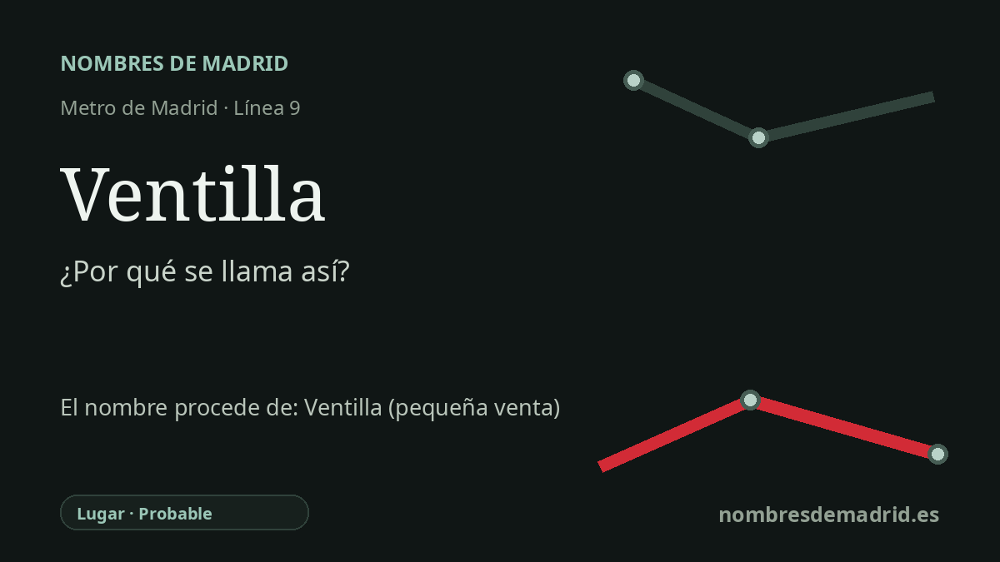

Publicado el · Investigación de Nombres de Madrid · Cómo verificamos cada origen · 9 fuentes consultadas
Respuesta rápida
Ventilla debe su nombre a La Ventilla, nombre tradicional de la zona de Almenara en Tetuán. El topónimo probablemente procede de una pequeña venta de camino situada junto a la antigua carretera de Francia.
La historia del nombre
La estación de Ventilla toma su nombre de La Ventilla, denominación tradicional del entorno que hoy corresponde al barrio administrativo de Almenara, en el distrito de Tetuán. La estación está situada en la avenida de Asturias, en una zona donde el nombre oficial y el nombre vivido no coinciden del todo: Almenara es el barrio municipal, pero La Ventilla sigue siendo la identidad vecinal.
La explicación habitual del topónimo combina lengua e historia de caminos. En español, una venta era una posada o lugar de parada junto a un camino, y el sufijo -illa puede tener valor diminutivo. La historia local del barrio afirma que, a la salida de la antigua carretera de Francia, existía una venta conocida como Ventilla o La Ventilla, y que de ella tomó nombre el asentamiento posterior.
Antes de incorporarse a Madrid, estos terrenos pertenecían al antiguo municipio de Chamartín de la Rosa. La documentación municipal confirma que Chamartín de la Rosa fue anexionado a Madrid en 1948 y que Tetuán pasó a ser distrito independiente en 1955. La zona de Ventilla-Almenara se configuró desde comienzos del siglo XX con vivienda obrera modesta, pequeños talleres e industrias, como un crecimiento espontáneo al norte del Tetuán más antiguo.
El nombre conserva también una historia social muy marcada. Las fuentes sobre el barrio describen La Ventilla como un área de infravivienda, transformada después por programas de vivienda pública, la intervención del IVIMA y la apertura de la avenida de Asturias entre la plaza de Castilla y el eje del Barrio del Pilar/Sinesio Delgado. La estación de Metro, inaugurada el 3 de junio de 1983, llegó precisamente en las décadas en que el barrio se estaba rehaciendo físicamente.
El origen en una venta es probable, no está probado de forma absoluta: la estación se llama por La Ventilla, y el significado de venta y el valor diminutivo de -illa están respaldados por el diccionario de la RAE. La afirmación concreta de que una venta determinada dio nombre al barrio aparece mejor documentada en historia local que en una ficha toponímica oficial. No consta prueba fiable de que la estación de Metro se llamara antes Sorolla; parece más probable que esa referencia corresponda a una parada cercana de EMT, Sorolla-Avenida de Asturias, o a otros usos históricos no relacionados del nombre Sorolla en el Metro.